Ore & Material Field Guide¶
Found something you don’t recognise? Pick the deposit type it came from, then match what you see in the world. Every entry shows what it looks like in-game, how to refine it, and what it leads to.
Salt Flat & Crystal Deposits 3
White crusts, salt pans, and layered crystal beds in dry basins. Halite, gypsum, sylvite.
Halite (Rock Salt)¶
Real-world uses · Food seasoning; chemical feedstock (chlorine/caustic soda); de-icing.
Spot it · Clear to white cubic crystals; can be reddish or orange from mineral impurities. Soft; breaks into clean cube cleavage fragments.
Refine it
- At Brine Treatment Unit → BSbrine solution
- At Electric Arc Furnace → SMsodium metal CG
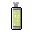
chlorine gas
Geology & field notes
Geology · Evaporite deposits in arid basins -- precipitates from drying seawater or saline lakes; massive bedded layers or salt domes.
Typical Size / Scale · Huge stratified beds hundreds of meters thick; salt domes can be kilometers across. Often mined underground via room-and-pillar methods, or produced via evaporation ponds.
Landmark / Recognition · White crusts on dry lakebeds; polygon-cracked pans; little to no vegetation. Outcrops are rare in wet climates because salt dissolves readily -- an arid basin with white crust is the primary cue.
In Conduvia · Expect bright-white flats and subtle cube-crystal clusters in desert terrain. Cracked salt-pan plates; ground may behave differently underfoot.
Gypsum (Calcium Sulfate)¶
Real-world uses · Plaster and drywall; cement additive; soil conditioner.
Spot it · White or gray chalky massive rock; can be clear (selenite) or fibrous (satin spar). Very soft -- scratches with a fingernail; can form bladed crystals or desert rose clusters.
Refine it
- At Rotary Calciner Kiln → POplaster of Paris
- At Rotary Calciner Kiln → CC
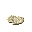
cement clinker - At Cement Ball Mill → PCPortland cement
Leads to · GBgypsum board (drywall)
Geology & field notes
Geology · Evaporite layers interbedded with limestone, shale, and halite; forms during evaporation or hydration of anhydrite; also from saline groundwater and hot springs.
Typical Size / Scale · Thick beds meters to tens of meters; common open-pit quarries. Crystals can be exceptionally large in rare pockets -- meter scale in some localities.
Landmark / Recognition · White slopes and cliffs; crumbly scratchable outcrop; powdery crust soils; sparse vegetation from soil salinity.
In Conduvia · Light gray and white seams and layered bands in sedimentary terrain. Rare selenite pockets expose translucent blade-like crystal clusters.
Sylvite (Potash Ore)¶
Real-world uses · Fertilizer potassium source; potassium chemical feedstock.
Spot it · Colorless to pale orange or red cubic crystals; often pinkish with mineral impurities.
Refine it
- At Froth Flotation Cell → MO
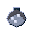
muriate of potash (KCl) SL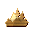
salt lick
Geology & field notes
Geology · Late-stage evaporite in closed basins -- forms after extreme evaporation; interlayered with halite and anhydrite in ancient evaporite sequences.
Typical Size / Scale · Localized beds and lenses (meters) within thick salt sequences; mined underground or via solution methods.
Landmark / Recognition · Rarely exposed at surface; occurs in association with other evaporite minerals deeper in arid basin terrain.
In Conduvia · Deep in salt-bearing terrain, look for rare pinkish cube-crystal clusters nested within halite layers.
Metal Ore Veins 4
Brassy, metallic, or dark minerals in quartz veins. Green staining = copper nearby. Rusty cap = look below. Chalcopyrite, galena, sphalerite, pyrite.
Chalcopyrite (Copper Iron Sulfide)¶
Real-world uses · Copper ore -- primary source of copper for wiring, electronics, and alloys.
Spot it · Brassy yellow metallic mineral; tarnishes iridescent purple, blue, or green. Softer than pyrite; often massive and grainy with rare well-formed crystals.
Refine it
- At Trip Hammer → CCcrushed chalcopyrite
- At Electric Jaw Crusher → CCcrushed chalcopyrite
- At Trip Hammer → CC
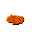
chalcopyrite concentrate
Leads to · RCrefined copper ingot CCcopper cathode
Geology & field notes
Geology · Hydrothermal veins and disseminations in igneous intrusions; common in porphyry copper systems and massive sulfide settings.
Typical Size / Scale · Veins: cm to m thick. Porphyry systems: huge low-grade volumes (km-scale pit type). Often mined as large bulk-rock operations when found in porphyry style.
Landmark / Recognition · Green malachite and blue azurite stains in oxidized zones. Rusty gossan caps can indicate sulfides below; quartz veins with brassy specks are a reliable surface tell.
In Conduvia · Yellow-gold metallic chunks embedded in quartz or stone veins, with green staining around them. Green staining near a vein is a reliable indicator of a copper system -- learn to read it.
Galena (Lead Sulfide)¶
Real-world uses · Lead ore (batteries, shielding); often carries significant silver value.
Spot it · Lead-gray metallic cubes with perfect cubic cleavage; very heavy for size. Soft; scratches easily; fresh faces are shiny, tarnished surfaces go dull.
Refine it
- At Froth Flotation Cell → GC
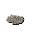
galena concentrate - At Rocker Box → GCgalena concentrate
- At Sluice Box → GCgalena concentrate
- At Electric Ball Mill → GG
 ground galena
ground galena
Geology & field notes
Geology · Low to mid temperature hydrothermal veins, especially in limestone and dolostone (MVT style); often with sphalerite, fluorite, and calcite.
Typical Size / Scale · Veins usually under 1 m thick but laterally extensive; replacement bodies can be tens of meters. Common underground mining geometry.
Landmark / Recognition · White coatings in weathered zones (anglesite and cerussite). Often found in limestone caves and veins alongside calcite and fluorite.
In Conduvia · Heavy dark-gray cube chunks embedded in limestone veins. One of the densest ores you'll carry -- noticeably heavier than its size suggests.
Sphalerite (Zinc Sulfide)¶
Real-world uses · Zinc ore -- galvanizing, alloys and brass, batteries; may carry minor cadmium and indium.
Spot it · Brown to honey-yellow resinous crystals; iron-rich varieties are black. Translucent when pure; freshly broken faces can carry a faint sulfur smell.
Refine it
- At Electric Ball Mill → GS
 ground sphalerite
ground sphalerite - At Froth Flotation Cell → SC
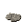
sphalerite concentrate
Leads to · ZI 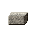 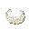
Geology & field notes
Geology · Common with galena in limestone-hosted deposits (MVT) and in VMS systems with copper minerals.
Typical Size / Scale · Vein and replacement bodies similar to galena; the two minerals are often intimately mixed.
Landmark / Recognition · Oxidized zones may show pale green smithsonite coatings. Look for shiny brown-black chips in limestone vugs near galena cubes -- they commonly occur together.
In Conduvia · Often occurs in the same vein district as galena -- if you found one, check the surrounding area. Resinous brown to black crystal chunks with a distinct glossy surface.
Pyrite (Iron Sulfide -- Fool's Gold)¶
Real-world uses · Not a modern iron ore; historically used for sulfur and sparks; a major indicator mineral for nearby metal systems.
Spot it · Brassy yellow metallic cubes with characteristic striations; harder than chalcopyrite. Often forms nodules ("pyrite suns") or tiny glitter points disseminated in shale.
Refine it
- At Sulfur Burner / Pyrite Roaster → RH
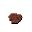
roasted hematite
Leads to · IB 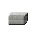
Geology & field notes
Geology · Extremely common sulfide in hydrothermal, igneous, metamorphic, and sedimentary settings; forms cubes, pyritohedra, and massive granular zones.
Typical Size / Scale · Scattered grains to massive ore bodies; veins can be meters thick.
Landmark / Recognition · Weathering creates rusty gossans and orange-stained drainage. In outcrop: tiny gold-cube glitter; in weathered zones: red-brown iron staining.
In Conduvia · Pyrite alone isn't the prize -- but where it appears, more valuable sulfides are often nearby. Rusty orange drainage stains and gossan caps are your environmental cue when prospecting.
Iron Ores & Bulk Rock 5
The big feedstocks: iron for steel, limestone for cement, silica for glass, bauxite for aluminium. Usually massive, not small veins. Hematite, magnetite, bauxite, limestone, silica.
Hematite (Iron Oxide)¶
Real-world uses · Primary iron ore for steel; also a red pigment (ochre).
Spot it · Specular hematite: steel-gray or black shiny flakes. Earthy hematite: brick-red dull masses; diagnostic reddish-brown streak when scratched.
Refine it
- At Stone Mortar → RO
 red ochre pigment
red ochre pigment - At Roasting Pit → RHroasted hematite
- At Trip Hammer → CH
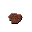
crushed hematite - At Electric Jaw Crusher → CHcrushed hematite
Leads to · IBiron bloom PI 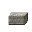
Geology & field notes
Geology · Commonly from banded iron formations (BIFs) and enrichment and weathering zones; often associated with magnetite and goethite.
Typical Size / Scale · Can form enormous formation-scale deposits; open pits hundreds of meters deep. Also occurs as smaller ironstone beds or residual boulders.
Landmark / Recognition · Red soils; striped red and gray banding in BIF cliffs. Leaves rust-red powder when scratched -- a reliable hand test.
In Conduvia · Red-brown seams and banded layers on cliff faces; banded iron formations show alternating red and gray stripes. Mining raises red dust -- a visual tell distinct from other iron ores.
Magnetite (Iron Oxide)¶
Real-world uses · Iron ore; also produces natural magnetism (the basis of historic lodestone compasses).
Spot it · Black metallic to dull mineral; granular to octahedral crystals. Magnetic -- the single clearest field identification test.
Refine it
- At Trip Hammer → CMcrushed magnetite
- At Electric Jaw Crusher → CMcrushed magnetite
Geology & field notes
Geology · Occurs in igneous and metamorphic rocks, layered intrusions, skarns, and iron formations; also concentrates as black sand placers.
Typical Size / Scale · Seams in intrusions (meters thick) or massive iron formation and taconite systems. Black sands can blanket beaches and river bars.
Landmark / Recognition · A magnet sticks to it; black sand streaks on beaches and river bars are a surface indicator. Dense concentrations can interfere with compass readings.
In Conduvia · Black ore lumps or octahedral crystal clusters. A compass near a magnetite deposit will behave unreliably -- a useful prospecting cue.
Bauxite (Aluminum Ore)¶
Real-world uses · Primary aluminum ore (alumina to aluminum); can carry gallium as a byproduct.
Spot it · Red-brown earthy mass with pisolites (pea-sized pellets). Clay-like texture; mottled whites, greys, and browns; no large crystals.
Refine it
- At Trip Hammer → CB
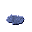
crushed bauxite - At Electric Jaw Crusher → CBcrushed bauxite
Geology & field notes
Geology · Tropical laterite weathering concentrate of aluminum hydroxides; forms blanket-like soil profiles over suitable parent rock.
Typical Size / Scale · A few to tens of meters thick but spread over enormous plateaus; typically strip-mined.
Landmark / Recognition · Distinct red lateritic soils; soft and diggable; the pea-sized pisolite pellets are the diagnostic feature.
In Conduvia · Found as surface patches in tropical and humid biomes -- thin coverage but broad extent. Breaks into distinctive pea-sized pellets, visually unlike any other ore you'll encounter at surface.
Limestone (Calcium Carbonate Rock)¶
Real-world uses · Steelmaking flux; cement and concrete backbone; soil pH neutralizer; lime source.
Spot it · Gray to cream massive rock, often with fossils visible on weathered surfaces. Fresh break looks sugary-crystalline; reacts with acid if present.
Refine it
- At Trip Hammer → LF
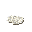
limestone flux BL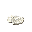
burned lime (quicklime) - At Hand Crafting → LN
 limestone nodule
limestone nodule - At Trip Hammer → LFlimestone flux
Geology & field notes
Geology · Sedimentary carbonate rock from marine shelves and reefs; often fossil-bearing; can form karst caves and host replacement ores.
Typical Size / Scale · Formation-scale layers spanning many kilometers; cliffs and plateaus; enormous quarries.
Landmark / Recognition · Karst terrain: sinkholes, caves, and springs. Sheer light-colored cliffs; thin soils on outcrop.
In Conduvia · Large continuous light-gray layers forming cliffs and cave systems. Fossil imprints on exposed faces are a clear identifier -- look for them on freshly broken surfaces.
Quartz / Silica (Sand or Quartzite)¶
Real-world uses · Glass and foundry sand; ceramics; silicon pipeline starter; quartzite as a high-grade silica source.
Spot it · Sand: pale cream or golden gritty grains; often carries a glassy sparkle. Quartzite: hard, sugary crystalline rock; quartz crystals: clear or milky hexagonal prisms.
Refine it
- At Reverberatory Furnace → CMcopper matte
- At Copper Converter (Peirce-Smith) → BC
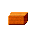
blister copper - At Rotary Calciner Kiln → CCcement clinker
- At Submerged Arc Furnace → F(ferrosilicon (FeSi) CD
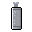
carbon dioxide gas - At Flash Smelting Furnace → NF
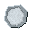
nickel furnace matte - At Submerged Arc Furnace → MG
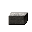
metallurgical-grade silicon CDcarbon dioxide gas
Leads to · BGborosilicate glass tube FG flat glass sheet GF
flat glass sheet GF glass-fiber roving PCPortland cement CIcopper ingot
glass-fiber roving PCPortland cement CIcopper ingot
Geology & field notes
Geology · Quartz-rich sands from beaches and dunes and clean sandstones; quartzite is metamorphosed sandstone; quartz veins also common.
Typical Size / Scale · Dune fields can be vast; sandstones hundreds of meters thick; quartzite ridges run for kilometers.
Landmark / Recognition · Light-colored beaches and river sands; quartzite stands as resistant ridges; quartz veins cut across rock as white ribbons.
In Conduvia · Appears in two main forms: loose sand patches along riverbeds and desert flats, and quartz crystal veins cutting through rock. River-gathered sand is easier to access; vein quartz yields higher purity material.
Surface & River Finds 5
Materials you can grab with no mining at all: riverbed pebbles, bog nodules, surface float. Flint, obsidian, native copper, bog iron, cassiterite.
Flint (Chert)¶
Real-world uses · Stone Age toolmaking material; fire-starting sparks; sharp edges from conchoidal fracture.
Spot it · Dark gray, brown, or black waxy luster; conchoidal fracture produces razor-sharp edges. Often has a white chalky outer rind (cortex) if derived from nodules.
Refine it
- At Knapping Station → FF
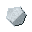
flint flake - At Workbench → FA
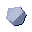
flint-and-steel striker - At Rotary Calciner Kiln → CP
 calcined potters’ flint
calcined potters’ flint
Geology & field notes
Geology · Microcrystalline quartz in chalk and limestone nodules and chert beds; often of biological silica origin in marine sediments.
Typical Size / Scale · Nodules: golf ball to football size; bedded chert forms thin but laterally persistent layers.
Landmark / Recognition · Black nodules in white chalk; sharp flakes scattered on ground near chalk and gravel exposures. Resistant chert ribs outcrop where surrounding limestone has eroded away.
In Conduvia · Small black and brown nodules embedded in limestone and chalk layers. Striking flint against another hard stone produces sharp shards -- useful for early tools and firestarting.
Obsidian (Volcanic Glass)¶
Real-world uses · Ultra-sharp blade material; volcanic glass formed by rapid cooling of silica-rich lava.
Spot it · Jet black glassy rock; conchoidal fracture; extremely sharp edges; brittle. Can be banded or bubble-rich; reflective in direct light.
Refine it
- At Knapping Station → OFobsidian flake
Geology & field notes
Geology · Forms at rhyolite domes and flow margins where lava cools too fast to crystallize; often near pumice and light rhyolite.
Typical Size / Scale · Flows and domes can be hill-sized; outcrops meters to hundreds of meters thick and kilometers long.
Landmark / Recognition · Black glossy blocky flow surfaces; minimal vegetation on fresh flows; abundant sharp shards on the ground.
In Conduvia · Found as jet-black glassy boulders and flow surfaces in volcanic terrain. The edges of freshly broken obsidian are exceptionally sharp -- a prized early cutting material. Rare but unmistakable once you've seen it.
Native Copper (Elemental Copper)¶
Real-world uses · The earliest copper route -- cold-workable metal nuggets and masses; later smelted.
Spot it · Reddish metallic masses or wire forms; tarnish to green or black with age; malachite and azurite coatings common.
Refine it
- At Clay Crucible → CIcopper ingot
- At Clay Crucible → BI
 bronze ingot
bronze ingot - At Stone Anvil → HC
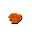
hammered copper nugget
Geology & field notes
Geology · Occurs as native metal in basalt flows and sediment-hosted beds, and in oxidized zones of copper systems; often coated with green and blue copper minerals.
Typical Size / Scale · Nuggets from gram weight to fist size in gravels; rare giant masses have been found historically in certain districts. Can also occur as disseminations or plates within host rock.
Landmark / Recognition · Green malachite staining with a metallic red glint; heavy and malleable if hammered.
In Conduvia · Found near basalt cliffs or in river gravels as reddish metallic masses. Green malachite and blue azurite staining marks copper-bearing ground -- learn to read these weathering colors.
Bog Iron (Limonite)¶
Real-world uses · Early iron source from wetlands; bloomery-friendly; renewable on long timescales.
Spot it · Rust-brown earthy nodules and crusts; often porous and mixed with organic material.
Refine it
- At Roasting Pit → RBroasted bog iron
Leads to · IBiron bloom
Geology & field notes
Geology · Forms by precipitation of iron oxyhydroxides in bogs where iron-rich groundwater meets oxygenated, acidic surface conditions.
Typical Size / Scale · Surficial deposit in peat and sand near the water table; nodules range from pea to fist size. Deposit regenerates over decades -- a slow renewable resource.
Landmark / Recognition · Orange sediment visible in bog water; rusty soils; an oily-looking surface film from iron bacteria is a reliable tell.
In Conduvia · Gathered from bogs and wetland areas -- not mined from seams but scooped from iron-rich ground. A reliable early iron source before deeper deposits become accessible.
Cassiterite (Tin Oxide)¶
Real-world uses · The primary tin ore; essential for bronze alloy. Found as heavy dark pebbles in stream gravels.
Spot it · Heavy, dark brown to black; sub-metallic lustre; short stubby prisms or rounded stream pebbles. Very dense -- sinks fast and settles ahead of lighter material in moving water; often associated with quartz and tourmaline.
Refine it
- At Clay Crucible → TI
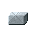
tin ingot - At Clay Crucible → BIbronze ingot
- At Trip Hammer → CC
 crushed cassiterite
crushed cassiterite - At Electric Induction Furnace → TItin ingot
- At Electric Induction Furnace → BIbronze ingot
Geology & field notes
Geology · Cassiterite (SnO₂) forms in high-temperature granite-related veins and pegmatites, then concentrates in placer gravels downstream -- the reason Bronze Age traders followed rivers to find it.
Typical Size / Scale · Hard-rock lodes (veins, pegmatites): narrow high-grade shoots. Alluvial placers: thin gravel lenses in stream beds and terrace gravels.
Landmark / Recognition · Dark heavy pebbles in clear-water stream gravels; black sand association with ilmenite and magnetite. Upstream hard-rock source: quartz-tourmaline veins in granite terrain.
In Conduvia · Shows up first as heavy dark pebbles in stream gravels -- the easier early find. Hard-rock vein deposits go deeper underground and offer a more consistent long-term source.
Deep & Instrument Finds 3
Late-game materials you won't identify by eye alone. Spodumene (lithium), rare earth ore, uraninite.
Spodumene (Lithium Ore)¶
Real-world uses · Lithium for advanced batteries; also used in ceramics and glass inputs.
Spot it · Large prismatic crystals; pale green, pink, or white; distinctive blade-like cleavage. Pegmatite host is visibly coarse: oversized feldspar and mica.
Refine it
- At Rotary Calciner Kiln → BS
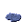
beta-spodumene
Leads to · LS 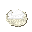
Geology & field notes
Geology · Forms in granitic pegmatites (very coarse-grained dikes) with quartz, feldspar, and mica; crystals can be enormous.
Typical Size / Scale · Pegmatite dikes 1–20 m thick, hundreds of meters long; ore shoots tens of meters. Crystal size can be extreme in rare cases -- meter-scale specimens exist.
Landmark / Recognition · Coarse "chunky granite" outcrops; occasional greenish blades visible on exposed surfaces.
In Conduvia · Found in mountain pegmatite veins, identified by unusually coarse, oversized crystal structure. If the granite-like rock around you has abnormally large mineral grains, you may be standing on a pegmatite.
Rare Earth Ore (e.g. Bastnäsite)¶
Real-world uses · Rare earth elements for magnets, lasers, and electronics; a critical late-tech supply chain.
Spot it · Often subtle: brown or tan host rock with disseminated minerals; heavy mineral sands can include brownish grains. Not reliably distinctive-looking -- identification often requires instruments.
Refine it
- At Froth Flotation Cell → RE
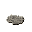
rare earth concentrate
Leads to · CO 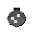 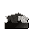
Geology & field notes
Geology · Commonly from carbonatite intrusions and some hydrothermal systems; also from ionic adsorption clays and heavy mineral concentrates.
Typical Size / Scale · Carbonatite pits can be large; clay deposits blanket hillsides (meters thick over kilometers).
Landmark / Recognition · Carbonate igneous rock context; barite and fluorite associations; slight radioactivity in some deposits.
In Conduvia · Rare earth ore won't announce itself visually -- this is anomaly-hunting territory. The host rock and subtle mineral associations are the tell, not the ore itself.
Uraninite (Pitchblende)¶
Real-world uses · Uranium ore for nuclear fuel and late-game power chains; requires careful handling.
Spot it · Black pitchy massive material; can appear as a black smear or coating on surrounding rock. Bright secondary minerals often appear nearby: yellow-green crusts and stains.
Refine it
- At Heap Leach Pad → UP
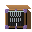
uranium pregnant liquor - At Electric Arc Furnace → YE
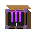
yellowcake
Leads to · UD 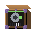 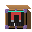
Geology & field notes
Geology · Occurs in hydrothermal veins, sandstone roll-front deposits, and unconformity settings; commonly associated with alteration, sulfides, and redox boundaries.
Typical Size / Scale · Veins: cm to tens of cm thick; roll-front bodies can be broad and at depth; unconformity pods can be small but very high grade.
Landmark / Recognition · Yellow staining on sandstone fractures. Often not visually obvious until you know what to look for -- instruments are the reliable method.
In Conduvia · Instruments are your primary tool here -- visual cues alone are unreliable. Yellow-green crust clusters around a dark core are what you're looking for on exposed faces.